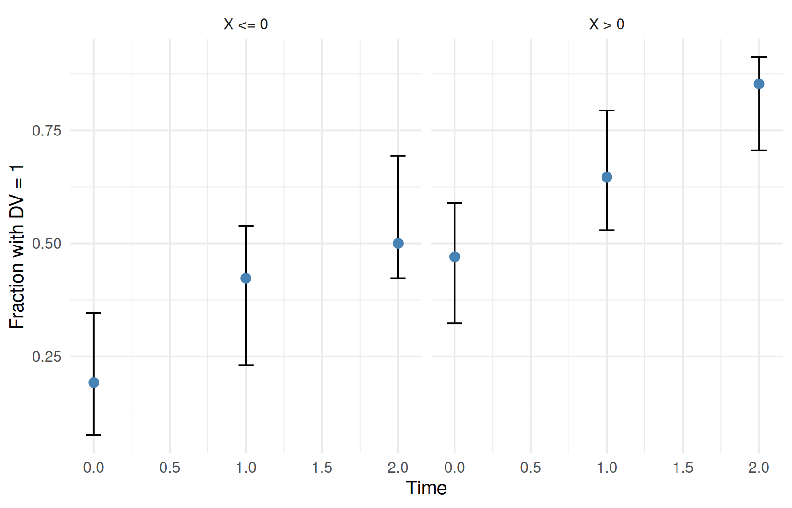

binary <- ferx_example("binary_logistic")
binary_dir <- book_tempdir("binary")
binary_data <- read.csv(binary$data, na.strings = ".")
head(binary_data, 6)
#> ID TIME DV CMT EVID MDV X
#> 1 1 0 0 3 0 0 1.0692
#> 2 1 1 0 3 0 0 1.0692
#> 3 1 2 1 3 0 0 1.0692
#> 4 2 0 0 3 0 0 -1.0085
#> 5 2 1 0 3 0 0 -1.0085
#> 6 2 2 1 3 0 0 -1.0085
binary_data |> group_by(TIME) |> summarise(subjects = n(), fraction_1 = mean(DV))
#> # A tibble: 3 × 3
#> TIME subjects fraction_1
#> <int> <int> <dbl>
#> 1 0 60 0.35
#> 2 1 60 0.55
#> 3 2 60 0.7Binary endpoints
Where you are
Some endpoints are yes/no outcomes: a response, an adverse event, a seizure-free day. ferx models them with a [binary_model] block: the log-odds of the outcome is an expression of parameters, random effects, covariates and time, and the likelihood is Bernoulli. This chapter fits the bundled logistic example, checks it against ordinary logistic regression in R, adds a random effect, and checks the model by simulation.
NoteMaturity
Binary endpoints are the first of ferx-core’s categorical endpoints. Ordinal, count and other link functions are planned, not available. See the ferx-core categorical endpoints page.
The data
binary_logistic has 60 subjects with an outcome at times 0, 1 and 2, and a subject covariate X. DV is the 0/1 outcome on CMT = 3. There are no dose records:
Minimal runnable call
A logistic model needs only [parameters], [binary_model] and [fit_options]. cmt names the endpoint’s CMT value, and logit is the log-odds of DV = 1:
invisible(ferx_model_get_section(binary$model, "parameters"))
#> # [parameters]
#> theta TH0(0.0, -10.0, 10.0)
#> theta THX(0.0, -10.0, 10.0)
#> theta THT(0.0, -10.0, 10.0)
invisible(ferx_model_get_section(binary$model, "binary_model"))
#> # [binary_model]
#> cmt = 3
#> logit = TH0 + THX * X + THT * TIME
fit_binary <- ferx_fit(binary$model, binary$data, verbose = FALSE)
fit_binary$estimates[, c("estimate", "se", "rse_pct")]
#> estimate se rse_pct
#> TH0 -0.7748495 0.2665858 34.40485
#> THX 0.8709007 0.2091270 24.01273
#> THT 0.8268374 0.2107385 25.48730
fit_binary$ofv
#> [1] 213.5955Reading the result
Without random effects this is ordinary logistic regression. R’s glm() gives the same estimates and standard errors, and its residual deviance equals the OFV, which ferx reports on the −2 log-likelihood scale:
reference <- glm(DV ~ X + TIME, family = binomial, data = binary_data)
data.frame(ferx = fit_binary$theta, glm = coef(reference),
ferx_se = fit_binary$estimates$se, glm_se = sqrt(diag(vcov(reference))))
#> ferx glm ferx_se glm_se
#> TH0 -0.7748495 -0.7751720 0.2665858 0.2665817
#> THX 0.8709007 0.8701400 0.2091270 0.2090772
#> THT 0.8268374 0.8270292 0.2107385 0.2107273
c(ferx_ofv = fit_binary$ofv, glm_deviance = reference$deviance)
#> ferx_ofv glm_deviance
#> 213.5955 213.5955In sdtab, PRED and IPRED are probabilities of DV = 1 (typical and individual), IWRES is the Pearson residual (y − p) / √(p(1 − p)), and CWRES is not defined. There are no doses, so TAD and TAFD are empty:
head(fit_binary$sdtab, 4)
#> ID TIME DV CMT PRED IPRED CWRES IWRES EBE_OFV N_OBS TAFD TAD
#> 1 1 0 0 3 0.5390000 0.5390000 NaN -1.0812943 4.453797 NaN NaN NaN
#> 2 1 1 0 3 0.7277338 0.7277338 NaN -1.6348932 4.453797 NaN NaN NaN
#> 3 1 2 1 3 0.8593610 0.8593610 NaN 0.4045434 4.453797 NaN NaN NaN
#> 4 2 0 0 3 0.1606833 0.1606833 NaN -0.4375447 2.462139 NaN NaN NaNferx_predict() returns concentration-type predictions and has no rows for a binary endpoint. The probabilities are in sdtab and in simulations:
nrow(ferx_predict(binary$model, binary$data, fit = fit_binary))
#> [1] 0Options that matter
Key in [binary_model]
|
Meaning |
|---|---|
cmt |
The CMT value of this endpoint’s observation rows |
logit |
Log-odds of DV = 1: any expression of thetas, etas, covariates, individual parameters and TIME
|
link |
Optional; logit is the only link available |
- Observation rows carry
DV0 or 1 andEVID = 0. Any other value stops the fit. - Covariates enter at their subject value; a covariate column that changes over time is not yet supported in
logit(useTIMEfor time effects). - FOCEI, SAEM and IMP are suitable estimation methods (categorical estimation).
Variants
A random intercept
Subjects may differ in their tendency to respond. A random intercept ETA_I in the log-odds makes the model a mixed-effects logistic regression:
ri_lines <- readLines(binary$model)
ri_lines <- append(ri_lines, " omega ETA_I ~ 0.5", after = grep("theta THT", ri_lines))
ri_lines <- sub("logit = TH0 + THX * X + THT * TIME", "logit = TH0 + THX * X + THT * TIME + ETA_I", ri_lines, fixed = TRUE)
ri_model <- file.path(binary_dir, "binary_random_intercept.ferx")
writeLines(ri_lines, ri_model)
invisible(ferx_model_get_section(ri_model, "binary_model"))
#> # [binary_model]
#> cmt = 3
#> logit = TH0 + THX * X + THT * TIME + ETA_I
fit_ri <- ferx_fit(ri_model, binary$data, verbose = FALSE)
fit_ri$estimates[, c("estimate", "rse_pct")]
#> estimate rse_pct
#> TH0 -0.8501256 35.62861
#> THX 0.9504550 26.92926
#> THT 0.8999345 26.04293
#> ETA_I 0.4079273 116.36197
c(without_random_effect = fit_binary$ofv, with_random_effect = fit_ri$ofv)
#> without_random_effect with_random_effect
#> 213.5955 212.4832With three outcomes per subject, the variance of the random intercept is poorly determined (relative standard error above 100%), and its shrinkage is high (56%). The OFV drops by only 1.11 for one extra parameter: these data do not support between-subject variability in the response.
SAEM, which avoids the Laplace approximation, is an alternative for sparse binary data. On this weakly informative model its result depends on the random seed. Seeds 1 to 3 agree with each other and with FOCEI; the run with the engine’s default seed ends elsewhere, with a regularized covariance step:
saem_seeds <- list(default = NULL, seed_1 = list(seed = 1), seed_2 = list(seed = 2), seed_3 = list(seed = 3))
do.call(rbind, lapply(names(saem_seeds), function(name) {
# suppress the R warning that reports overriding the model file's method
f <- suppressWarnings(ferx_fit(ri_model, binary$data, method = "saem", settings = saem_seeds[[name]],
verbose = FALSE))
data.frame(run = name, ofv = f$ofv, t(setNames(f$estimates$estimate, rownames(f$estimates))),
max_rse_pct = max(f$estimates$rse_pct),
covariance_regularized = "covariance_regularized" %in% ferx_get_warnings(f, as_df = TRUE)$category)
}))
#> run ofv TH0 THX THT ETA_I max_rse_pct
#> 1 default 212.8381 -0.7809784 0.8912139 0.8331141 0.1603772 2284772.9988
#> 2 seed_1 212.5041 -0.8198987 0.9468319 0.8736665 0.3574003 132.1920
#> 3 seed_2 212.5060 -0.8117019 0.9284252 0.8685714 0.3831907 118.0836
#> 4 seed_3 212.5119 -0.8031152 0.9331072 0.8647746 0.3702206 127.6059
#> covariance_regularized
#> 1 TRUE
#> 2 FALSE
#> 3 FALSE
#> 4 FALSESet the seed for SAEM fits, and compare a few seeds when a variance is weakly identified (Estimation methods and controlling the fit).
Checking the model by simulation
ferx_simulate() draws a new 0/1 outcome for each observation record from the fitted probability. Comparing the observed fraction of ones with the simulated fractions is the binary counterpart of a visual predictive check (Simulation-based evaluation: VPC). Here it is split by time and by the sign of X:
simulated <- ferx_simulate(binary$model, binary$data, n_sim = 500, seed = 1, fit = fit_binary)
groups <- distinct(binary_data, ID, X) |> mutate(group = ifelse(X > 0, "X > 0", "X <= 0"))
simulated_fraction <- simulated |>
mutate(ID = as.integer(ID)) |>
left_join(groups, by = "ID") |>
group_by(SIM, TIME, group) |>
summarise(fraction = mean(DV_SIM), .groups = "drop") |>
group_by(TIME, group) |>
summarise(lo = quantile(fraction, 0.05), hi = quantile(fraction, 0.95), .groups = "drop")
observed_fraction <- binary_data |>
left_join(groups, by = c("ID", "X")) |>
group_by(TIME, group) |>
summarise(fraction = mean(DV), .groups = "drop")
ggplot(simulated_fraction, aes(TIME)) +
geom_errorbar(aes(ymin = lo, ymax = hi), width = 0.1) +
geom_point(data = observed_fraction, aes(y = fraction), colour = "steelblue", size = 2.5) +
facet_wrap(~ group) +
labs(x = "Time", y = "Fraction with DV = 1")
Binary endpoints with a PK model
logit can use individual parameters from [individual_parameters], so a binary endpoint can be combined with other model parts. No bundled example links a binary outcome to a PK model; see the ferx-core categorical endpoints page for the namespace logit can read. The related [markov_model] block for transitions between states is listed in Function, option and example index.
Pitfalls
-
DVmust be 0 or 1. An outcome with more categories stops the fit:bad_data <- binary_data bad_data$DV[1] <- 2 bad_file <- file.path(binary_dir, "binary_dv2.csv") write.csv(bad_data, bad_file, row.names = FALSE) try(ferx_fit(binary$model, bad_file, verbose = FALSE)) #> Error in ferx_rust_fit(model_path = normalizePath(model), data_path = normalizePath(data), : #> Fit error: [binary_model] cmt = 3: observed DV must be 0 or 1 (Bernoulli), got 2. For an ordered response with more than two categories use an ordinal endpoint (not yet supported). Few outcomes per subject carry little information on random effects. Check shrinkage and the OFV change before keeping a random effect.
Use
sdtabor simulations for probabilities, notferx_predict().print()on a binary fit summarises the model with labels meant for concentration models. Read the estimates fromfit$estimates.
Warnings you may see here
-
data_quality(warning): here it reports that the subjects use finite-difference inner gradients. That is expected for a binary endpoint, and the results are correct.
Summary
- Declare a binary endpoint with
[binary_model]:cmtand alogitexpression. - Without random effects the fit equals logistic regression; the OFV is the deviance.
- Add random effects to the log-odds for a mixed-effects model, and check whether the data support them.
-
sdtabholds probabilities and Pearson residuals; simulations give 0/1 outcomes for predictive checks.
Next: Time-to-event models models times to events.
TipReference
- R help:
?ferx_fit,?ferx_simulate - ferx-core: categorical endpoints, categorical estimation